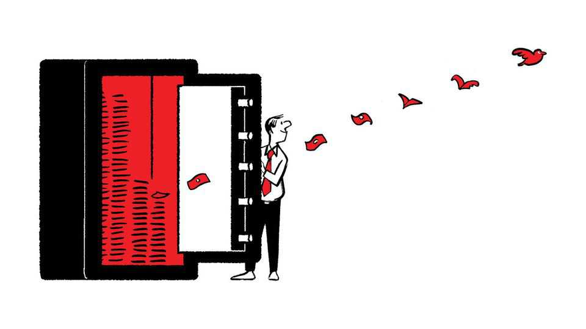
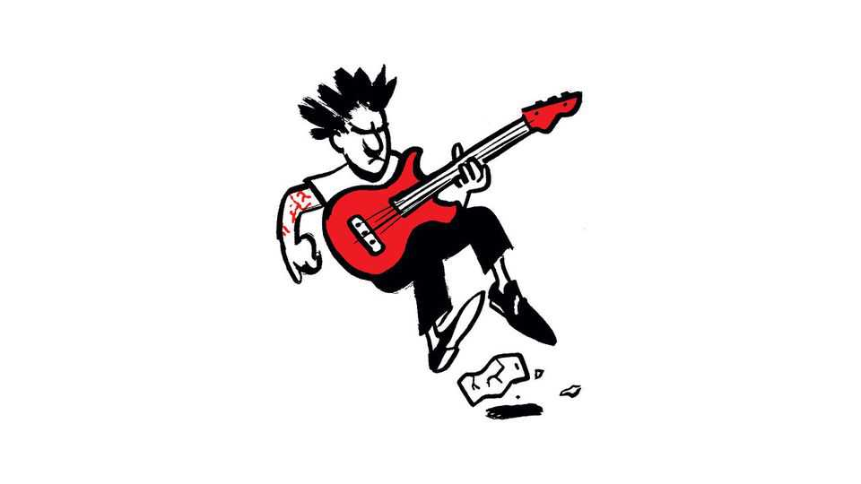

How effective is effective altruism?
Also this week, gun laws, rock concerts, human oversight of AI, public debt

Oct 22nd 2026
Letters are welcome via email to letters@economist.comFind out more about how we process your letter
The doctrine of effective altruism tells charities to spend their money to produce the largest possible benefits (“The century’s biggest idea”, October 3rd). But a much bigger idea says that governments, too, should be doing just that.
This idea is rapidly taking root. In Britain it is what the Treasury’s Green Book now adheres to. So when departments ask for money they have to estimate the benefits that the spending will produce and show how that compares with the cost to the taxpayer. And the benefits have to include not just increases in income but all those non-monetary things that make our lives worthwhile; health, safe streets, a job and so on. All of these non-monetary things are to be evaluated in units of life satisfaction, before they are translated back into their monetary equivalents.
In this way Britain is leading the world, by including all well-being benefits and applying this test to all expenditures, current as well as capital. This is a huge movement towards more rational government. As a recent report from the London School of Economics shows, this approach, if followed through in decision-making, would require major shifts in priorities. Let us hope these can be reflected in the next spending review.
Professor Lord Richard LayardCo-directorWell-Being ProgrammeCentre for Economic PerformanceLondon School of Economics
Example number one for the “strangeness” of effective altruists in your reckoning is that some “see the moral distinction between humans and other animals as weak”. But that’s not a strange idea at all. It is a viewpoint grounded in science and articulated by everyone from Charles Darwin and Jeremy Bentham to Jane Goodall and Richard Dawkins, who refer to other animals as our evolutionary cousins.
According to Our World in Data, humans farm and slaughter roughly 220bn vertebrate animals every year (90bn land animals and another 130bn farmed fish). That’s more animals raised and slaughtered for food each year than the total number of humans who have ever lived.
Pointing out the immorality of this reality does not require any “complex, even bizarre moral calculations.” It just requires the ability to apply scientific facts to moral reasoning.
Bruce FriedrichWashington, DC
Will MacAskill defends effective altruism without apparently noticing how far his moral reasoning depends on his own standpoint (By Invitation, October 10th). The very idea of a tithe presumes an ability to pay, which depends on one’s existing circumstances, and the whole enterprise rests on the worldview afforded by its adherents’ predicament and education. It is no accident that people such as Mr MacAskill sit at the forefront: Oxford-trained, with the time and, comparatively speaking, the money to contemplate the plight of others.
Living in Africa has opened my eyes to the Elastoplast effect of sporadic injections of money, which can lift even large numbers of indigent people for a time, but with little or no lasting effect.
On a microscopic scale, I give every day to a man who sleeps in a bus shelter. The effect is superficial and transitory. He is back every night until the police move him on, because structural unemployment and political stasis leave him with no prospect of work. Effective altruists say that large-scale giving can have high expected value, but where poverty is politically and economically induced, well-meaning giving makes no substantive long-term difference.
Without change at that level, nothing the effective altruists dream up will endure.
D.A.L. COLDWELLProfessor of managementUniversity of the Witwatersrand, Johannesburg
More letters on this topic can be found at: economist.com/lettersaltruism
America’s gun violence will continue, you say, until voters follow Australians and Britons “and decide they have had enough” (“Under the gun”, October 10th). The truth is messier. From 2005 to 2008, nearly a decade after Britain banned most handguns, I was a detective superintendent in Lambeth, south London, where young gang members favoured machine pistols, firing them from passing cars. Local officers and the wider Metropolitan Police worked with community groups to stop the shootings. In December 2025, in Sydney where I now live, two gunmen killed 15 people at Bondi Beach. The older gunman held a firearms licence and owned six guns lawfully.
Lambeth showed me the limits of a ban, and Bondi has shown Australians the limits of a licence. Strict laws have made both countries safer, yet each leaves a gap that falls to the police and the communities they serve, which is why Malcolm Gladwell’s point about the size of European police forces is worth taking seriously. Crime fell in central London when almost a third more officers were put on its streets after the bombings of July 2005. In Philadelphia a randomised trial found that foot patrols on the most dangerous corners cut violent crime by almost a quarter, though the gains vanished when the officers left.
Neither case isolated shootings, yet both show what visible policing adds to the law. America, with far more guns than either country, needs both.
Jonathan TottmanSydney
How should the law handle intent when robots act beyond their users’ control (“Unsuitable”, October 10th)? Consider the drunk driver. Getting blackout drunk doesn’t remove responsibility. The law traces culpability back to an earlier decision by an agent capable of making it; the pre-drunk self deciding to put the future self in that position. Why should autonomous systems be any different? A machine can’t bear moral responsibility. It sits with the human who exercises judgment in deciding to delegate authority to it.
Liam TalbotBristol
Your warning about relying on liability law to govern AI has a contractual dimension. OpenAI’s standard services agreement generally caps its contractual liability at the customer’s preceding 12 months’ fees, with exceptions including gross negligence, wilful misconduct and indemnification. Such caps can limit what an adopter recovers from its supplier even while the adopter faces claims from third parties.
A small employer may control how it uses a model while having little power to inspect or repair it. Making the employer liable may encourage caution, but it need not give the developer the same incentive to remove a defect.
Risk allocation should reflect who can prevent the particular harm, as well as who signs the purchase order. The bill can travel downstream. The power to fix the model may stay upstream.
Rohan SharmaUS delegate and technical expert for the International Organisation for Standardisation ISO/IEC JTC 1/SC 42 (AI standards)Temecula, California

Pop and rock stars who demand that fans put away their phones at concerts are not considering the price of a ticket (“Crowd control”, September 19th). Musicians are charging extraordinary prices for the privilege of seeing them perform. Last year I paid more than $300 to see Sir Paul McCartney in Las Vegas. For that money I want to leave with more than a T-shirt and a programme (another $50 each). I want photo and video memories of what I experienced, captured on my phone and available to me long after the T-shirt has worn out.
The Grateful Dead understood that recordings could extend the experience rather than diminish it, famously allowing, and even encouraging, fans to tape their concerts. Today’s artists should recognise the value of allowing fans to do the same. If I’m paying hundreds of dollars to be there, I’d like to decide how much of the experience to preserve.
Jason RussellLehi, Utah
Regarding the looming government-debt crisis (“Will bonds blow up?”, October 10th), politicians will not treat voters like grown-ups until voters start behaving like grown-ups. Voters consistently want leaders who offer them candies and sweets, without understanding that this will only lead to the dentist’s drill.
Vera HutzuliakMississauga, Canada